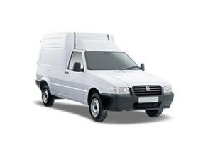

eca Transportes
eca Transportes
Fiat Fiorino
Com um motor 1.4, produzindo cerca de 80cv e 11kg de torque, super econômico e podendo transportar até 650kg. É o veiculo perfeito para rodar na cidade e transportar cargas comuns com agilidade e versatibilidade